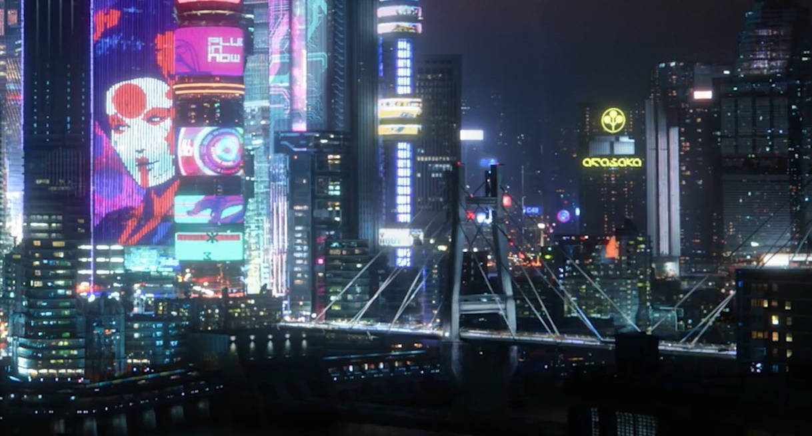

Introduction
A cyberpunk dystopia is a genre that blends futuristic technology with grim social decay. Set in sprawling urban landscapes dominated by towering skyscrapers, neon lights, and constant rain, these worlds often reflect the worst outcomes of unchecked technological advancement. In these dystopian settings, the divide between the wealthy elite and the impoverished masses is striking, creating a society where power, wealth, and technology are concentrated in the hands of a few, while the majority struggle to survive in squalid conditions.

Neon Cities and Overcrowded Megacities
In a cyberpunk world, cities are vast, densely populated, and chaotic. Megacities—massive, sprawling urban hubs—stretch across entire landscapes, often going on for miles and miles. These cities are defined by their futuristic, neon-lit skylines where the darkness is only broken by holographic advertisements and vibrant digital billboards. Streets are overcrowded, and the air is thick with smog, creating an atmosphere of decay and oppression. The hustle and bustle of this urban chaos serve as a backdrop to the stark contrast between the luxury of the few and the poverty of the many.
Conclusion
A cyberpunk dystopia is a bleak yet fascinating vision of the future—one where technology and human nature clash. Its a world filled with contradiction: futuristic innovation against decaying social order, individual freedom versus corporate control, and hopeful resistance amid an oppressive environment. These worlds explore the limits of technological progress and what it means to be human in an increasingly artificial society.

Cyberpkunk is very very nice, because its my favorite distopy and such deep and beautiful on the same time.